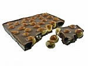

Choconut

- al dente
- A correct degree of doneness for pasta and vegetables.
- baste
- Brush oil around item to be cooked to prevent dryness.
- pinenut
- Also called pignoli.
The ingredients:
- 100 g. flour
- 10 g. sugar
- 1 cup water
- 2 eggs
- salt
- pepper
The procedure:
- Mix dry ingredients thoroughly.
- Pour in wet ingredients.
- Mix for 10 minutes.
- Bake for one hour at 300 degrees.
Written by Ethan Paek
epaek@scu.edu